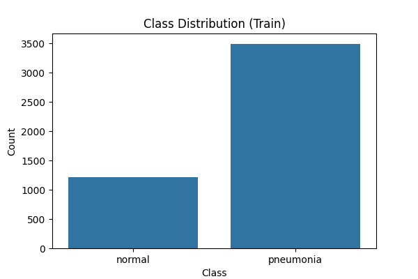
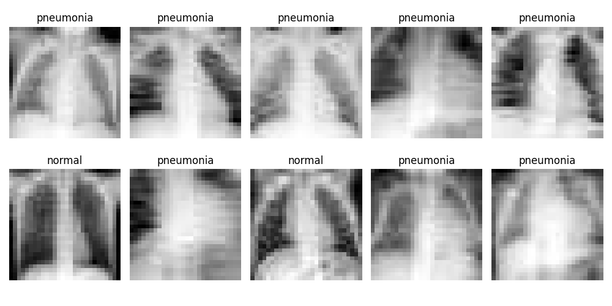
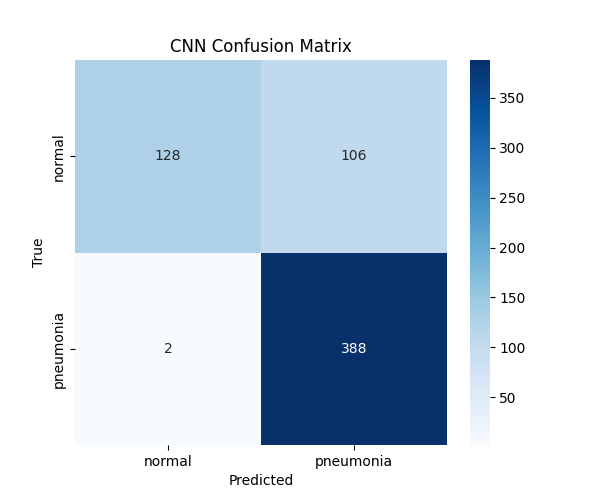

Medical Image Analysis: Pneumonia Detection
Comparing Traditional Machine Learning vs. Deep Learning
Angsar Shaumen
Advanced Machine Learning | Task 4
Press Arrow Keys to Navigate
The Dataset: PneumoniaMNIST
A lightweight, standardized version of clinical chest X-rays.

Class Distribution

Sample X-Rays (28x28)
Total
Samples
5,856
Classes
Binary (Normal/Pneumonia)
Exploratory Data Analysis
Week 4 Topic: Clustering & Dimensionality Reduction

PCA (Principal Component Analysis)

t-SNE Visualization
Observation: The two classes occupy distinct regions in the latent space, suggesting they are separable
by linear or non-linear boundaries.
Performance Comparison
Testing if complex Deep Learning is necessary for low-resolution data.
Traditional ML (PCA+SVM)
86.06%
Winner
Recall: 0.99
Deep Learning (CNN)
82.69%
Recall: 0.99
Conclusion: Simple global feature extraction (PCA) outperformed hierarchical local
feature extraction (CNN) on 28x28 images.
Deep Dive: Classification Analysis

CNN Confusion Matrix
Key Insights
- Both models achieved High Recall (0.99),
meaning they successfully flagged almost all Pneumonia cases.
- Safety First: In medical AI, avoiding False
Negatives (missing a sick patient) is the #1 priority.
- The CNN had slightly more False Positives (flagging healthy patients as sick) than the SVM.
Thank You
Questions?